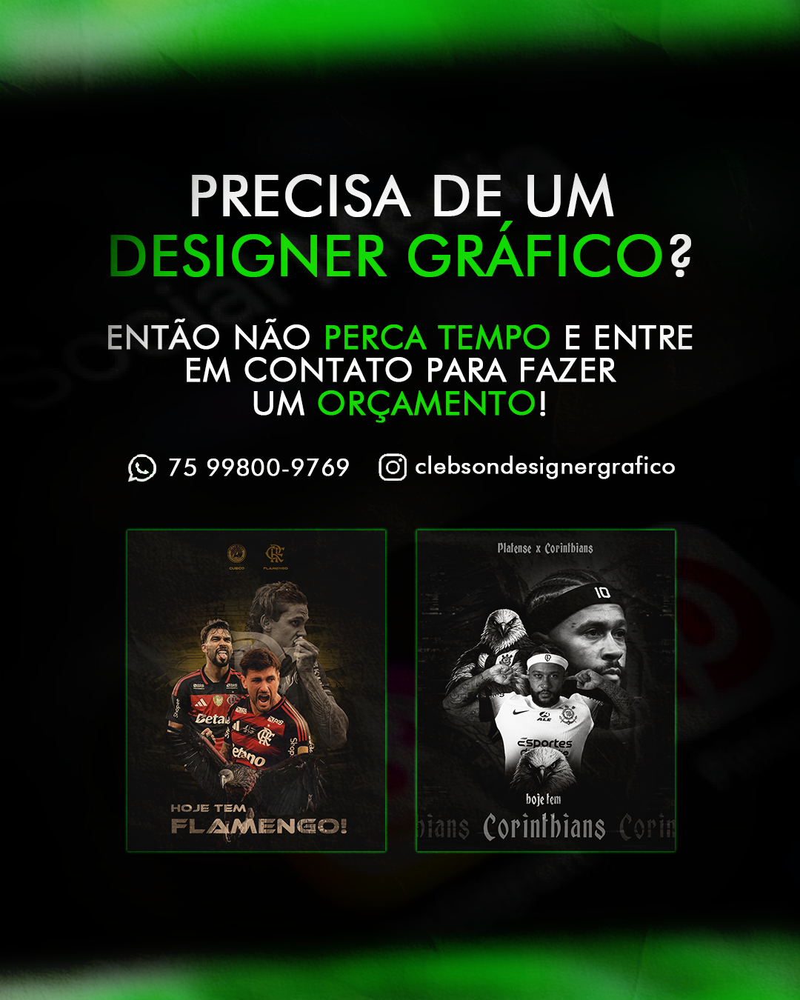

Contratar Designer Gráfico
Se você está procurando contratar designer gráfico para criar materiais profissionais e fortalecer a imagem da sua marca, investir em um design estratégico pode fazer toda a diferença. Um designer gráfico qualificado desenvolve peças visuais que ajudam empresas, profissionais e negócios locais a transmitir credibilidade, atrair clientes e aumentar resultados.

Ao contratar um designer gráfico, você garante materiais personalizados, alinhados à identidade visual da sua marca e desenvolvidos com foco em comunicação eficiente.
Por que contratar um designer gráfico?
A comunicação visual é um dos principais fatores que influenciam a percepção do público sobre uma empresa. Um design profissional transmite confiança, valoriza produtos e serviços e ajuda sua marca a se destacar da concorrência.
Além da estética, o designer gráfico organiza informações de forma estratégica para facilitar a compreensão da mensagem e aumentar o impacto visual.
Serviços de Design Gráfico
Ao contratar um designer gráfico, você pode solicitar diversos materiais personalizados para divulgação online e offline.
- Posts para Instagram e Facebook
- Banners promocionais
- Flyers e panfletos
- Cartões de visita
- Materiais para impressão
- Criativos para anúncios
- Capas para redes sociais
Designer Gráfico para Redes Sociais
As redes sociais são uma das principais ferramentas de divulgação atualmente. Desenvolvo artes profissionais para Instagram, Facebook, LinkedIn e outras plataformas, sempre buscando aumentar o engajamento e fortalecer a presença digital da marca.
Cada publicação é criada de forma personalizada, respeitando a identidade visual do negócio e os objetivos da campanha.
Criação de Identidade Visual
A identidade visual é responsável pela aparência e reconhecimento da sua marca. Ela inclui elementos como logotipo, paleta de cores, tipografia e padrões visuais.
Uma identidade visual consistente transmite profissionalismo e facilita o reconhecimento da empresa pelo público.
Design para Pequenas Empresas e Empreendedores
Muitos pequenos negócios precisam de materiais visuais para divulgar seus produtos e serviços. Ao contratar um designer gráfico freelancer, é possível obter soluções personalizadas com excelente custo-benefício.
Atendo empresas, lojas, restaurantes, profissionais autônomos, prestadores de serviço e empreendedores de diversos segmentos.
Artes para Campanhas Promocionais
Campanhas promocionais exigem materiais visualmente atrativos para captar a atenção do público. Desenvolvo banners, posts e peças publicitárias focadas em divulgação de promoções, lançamentos e eventos.
O objetivo é criar materiais que transmitam a mensagem rapidamente e incentivem a ação do cliente.
Benefícios de contratar um designer gráfico profissional
Contratar um designer gráfico profissional oferece diversas vantagens:
- Maior credibilidade para sua marca
- Comunicação visual mais eficiente
- Materiais exclusivos e personalizados
- Fortalecimento da identidade visual
- Melhor apresentação de produtos e serviços
- Mais profissionalismo nas redes sociais
- Diferenciação da concorrência
Como funciona o processo de criação
1. Briefing do projeto
Primeiro entendemos suas necessidades, objetivos e público-alvo para definir a melhor estratégia visual.
2. Planejamento visual
Organizo as informações e defino a estrutura visual adequada para cada material.
3. Desenvolvimento da arte
Crio o design de forma personalizada, respeitando a identidade da marca e os objetivos do projeto.
4. Revisões e entrega
Após sua análise, realizo os ajustes necessários e entrego os arquivos finais prontos para utilização.
Perguntas Frequentes (FAQ)
Quanto custa contratar um designer gráfico?
O valor varia de acordo com o tipo de projeto, quantidade de materiais e complexidade do trabalho. Solicite um orçamento personalizado para receber uma proposta adequada às suas necessidades.
Você atende empresas de qualquer segmento?
Sim. Desenvolvo materiais gráficos para diversos nichos, incluindo comércio, serviços, alimentação, eventos, tecnologia e muito mais.
Posso solicitar alterações?
Sim. As revisões fazem parte do processo para garantir que o resultado final esteja alinhado com sua expectativa.
Quais informações preciso enviar?
Você pode enviar textos, logotipo, imagens, referências visuais e demais informações necessárias para o desenvolvimento do projeto.
Qual é o prazo de entrega?
O prazo varia conforme o tipo de serviço solicitado, mas sempre busco entregar os projetos dentro do prazo combinado.
Contrate um Designer Gráfico
Se você deseja fortalecer sua marca, divulgar seus produtos ou melhorar sua presença nas redes sociais, entre em contato e solicite um orçamento. Desenvolvo materiais gráficos profissionais para empresas e empreendedores que buscam resultados através do design.
Conheça mais sobre meu trabalho em: Clebson Designer Gráfico
Veja também outros serviços: Designer para Pizzaria e Designer Gráfico Esportivo.